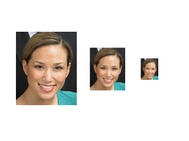

<!doctype html>
<html>
<head>
<script src="lbpcascade_frontalface.js"></script>


<script src="../webcv.js"></script>
<script src="../webcv-utils.js"></script>
<script src="../webcv-shadersource.js"></script>
<script src="../webcv-shaders.js"></script>
<script src="../webcv-imgproc.js"></script>
<script src="../webcv-gpu.js"></script>
<script src="../webcv-facedetect.js"></script>
<script src="jquery.js"></script>
<style>
    .webcvimage {
        border: solid 1px gray;
    }
</style>
<script>
/*global WebCV, cv, gl, alert, $, Float32Array, lbpcascade_frontalface, Uint8Array */
/*jslint bitwise: true */

$(document).ready(function () {
    var canvas = document.getElementById("glcanvas");

    window.cv = WebCV.create(canvas);
    if (cv.gl === null) {
        alert("WebGL not supported");
    }
    window.gl = cv.gl;

    var img = $('');
    window.img = img;
    
    var flipped = false;
    window.fd = undefined;
    var niterations = 10;
    var iteration = 0;

    $(img).load(function () {
        if (!fd) { 
            fd = new FaceDetector(lbpcascade_frontalface, img.width(), img.height());
        }
        window.fd = fd;
        window.rects = fd.detect(img.get(0));

        if (!showImage) {
            $('#faceimage div').remove()
            $(window.rects).each(function(n,e) {
                var box = $('<div>');
                box.css({"border": "solid 1px red",
                         "position": "absolute",
                         "left": e[0],
                         "top": e[1],
                         "width": e[2],
                         "height": e[3]});
                $('#faceimage').append(box);
            });
        }
        if (iteration < niterations){
            img.get(0).src = "./scales" + (flipped ? "" : "flip") + ".png";
            flipped = !flipped;
            iteration += 1;
        } else {
            var sum = 0;
            for(var i=0;i<window.times.length;i++) {
                sum += window.times[i];
            }
            var av = sum/window.times.length;
            console.log("Av over all iterations:", av);

        }
    });

    $('body #faceimage').append(img);

});

</script>
</head>
<body>
<canvas id="glcanvas" width="1" height="1"></canvas>

<div id="faceimage" style="position:relative">

</div>

</body>
</html>
